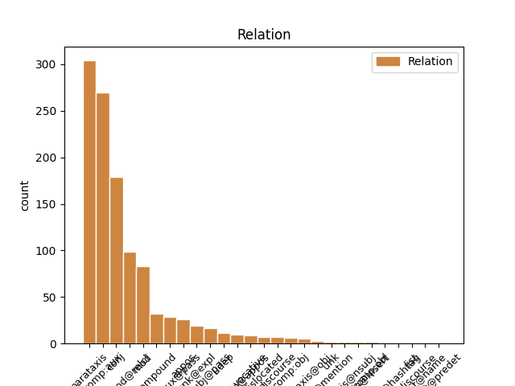
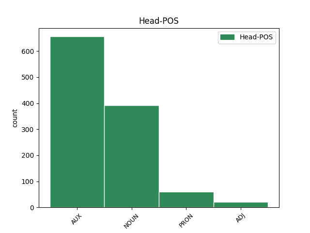
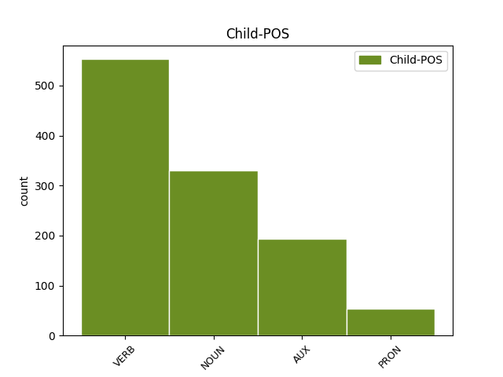

Distribution of features within this leaf



Agreement Rules sorted by frequency.
- When the dependent token is the complement for auxiliary(comp:aux) of the head token, and the head token is AUX and the dependent token is VERB.
1 Ok _ _ _ _ 0 _ _ _
2 @user _ _ _ _ 0 _ _ _
3 ho avere AUX VA Mood=Ind|Number=Sing|Person=1|Tense=Pres|VerbForm=Fin 0 _ _ _
4 capito capitare VERB V Mood=Ind|Number=Sing|Person=1|Tense=Pres|VerbForm=Fin 3 comp:aux _ _
5 torno _ _ _ _ 0 _ _ _
6 a _ _ _ _ 0 _ _ _
7 fare _ _ _ _ 0 _ _ _
8 esami _ _ _ _ 0 _ _ _
9 per _ _ _ _ 0 _ _ _
10 il _ _ _ _ 0 _ _ _
11 debito _ _ _ _ 0 _ _ _
12 , _ _ _ _ 0 _ _ _
13 torno _ _ _ _ 0 _ _ _
14 a _ _ _ _ 0 _ _ _
15 lavorare _ _ _ _ 0 _ _ _
16 che _ _ _ _ 0 _ _ _
17 è _ _ _ _ 0 _ _ _
18 meglio _ _ _ _ 0 _ _ _
19 ! _ _ _ _ 0 _ _ _
20 #labuonascuola _ _ _ _ 0 _ _ _
1 #tfaordinario _ _ _ _ 0 _ _ _
2 è essere AUX VA Mood=Ind|Number=Sing|Person=3|Tense=Pres|VerbForm=Fin 0 _ _ _
3 stato _ _ _ _ 0 _ _ _
4 il _ _ _ _ 0 _ _ _
5 fondo _ _ _ _ 0 _ _ _
6 cassa _ _ _ _ 0 _ _ _
7 per _ _ _ _ 0 _ _ _
8 la _ _ _ _ 0 _ _ _
9 riforma _ _ _ _ 0 _ _ _
10 di _ _ _ _ 0 _ _ _
11 la _ _ _ _ 0 _ _ _
12 #labuonascuola _ _ _ _ 0 _ _ _
13 di _ _ _ _ 0 _ _ _
14 @user _ _ _ _ 0 _ _ _
15 . _ _ _ _ 0 _ _ _
16 Beneficienza _ _ _ _ 0 _ _ _
17 la _ _ _ _ 0 _ _ _
18 faccio fare VERB V Mood=Ind|Number=Sing|Person=1|Tense=Pres|VerbForm=Fin 2 parataxis _ _
19 quando _ _ _ _ 0 _ _ _
20 dico _ _ _ _ 0 _ _ _
21 io _ _ _ _ 0 _ _ _
22 !!!! _ _ _ _ 0 _ _ _
1 Il _ _ _ _ 0 _ _ _
2 disegno _ _ _ _ 0 _ _ _
3 di _ _ _ _ 0 _ _ _
4 legge _ _ _ _ 0 _ _ _
5 su _ _ _ _ 0 _ _ _
6 le _ _ _ _ 0 _ _ _
7 unioni _ _ _ _ 0 _ _ _
8 civili _ _ _ _ 0 _ _ _
9 slitta _ _ _ _ 0 _ _ _
10 di _ _ _ _ 0 _ _ _
11 una _ _ _ _ 0 _ _ _
12 settimana _ _ _ _ 0 _ _ _
13 . _ _ _ _ 0 _ _ _
14 Adesso _ _ _ _ 0 _ _ _
15 siamo _ _ _ _ 0 _ _ _
16 in _ _ _ _ 0 _ _ _
17 ritardo ritardo NOUN S Gender=Masc|Number=Sing 0 _ _ _
18 di _ _ _ _ 0 _ _ _
19 settant' _ _ _ _ 0 _ _ _
20 anni _ _ _ _ 0 _ _ _
21 e _ _ _ _ 0 _ _ _
22 una _ _ _ _ 0 _ _ _
23 settimana settimana NOUN S Gender=Fem|Number=Sing 17 conj _ SpaceAfter=No
24 . _ _ _ _ 0 _ _ _
25 [ _ _ _ _ 0 _ _ _
26 @user _ _ _ _ 0 _ _ _
27 ] _ _ _ _ 0 _ _ _
1 Mamma _ _ _ _ 0 _ _ _
2 , _ _ _ _ 0 _ _ _
3 ma _ _ _ _ 0 _ _ _
4 non _ _ _ _ 0 _ _ _
5 aveva avere AUX VA Mood=Ind|Number=Sing|Person=3|Tense=Imp|VerbForm=Fin 0 _ _ _
6 detto _ _ _ _ 0 _ _ _
7 che _ _ _ _ 0 _ _ _
8 metteva _ _ _ _ 0 _ _ _
9 a _ _ _ _ 0 _ _ _
10 posto _ _ _ _ 0 _ _ _
11 la _ _ _ _ 0 _ _ _
12 scuola _ _ _ _ 0 _ _ _
13 ? _ _ _ _ 0 _ _ _
14 A _ _ _ _ 0 _ _ _
15 i _ _ _ _ 0 _ _ _
16 bambini _ _ _ _ 0 _ _ _
17 non _ _ _ _ 0 _ _ _
18 puoi potere AUX VM Mood=Ind|Number=Sing|Person=2|Tense=Pres|VerbForm=Fin 5 parataxis _ _
19 mentire _ _ _ _ 0 _ _ _
20 . _ _ _ _ 0 _ _ _
21 @user _ _ _ _ 0 _ _ _
22 #labuonascuola _ _ _ _ 0 _ _ _
23 http://t.co/Pgq0SBubnx _ _ _ _ 0 _ _ _
1 Incidente _ _ _ _ 0 _ _ _
2 in _ _ _ _ 0 _ _ _
3 acciaieria _ _ _ _ 0 _ _ _
4 , _ _ _ _ 0 _ _ _
5 muore _ _ _ _ 0 _ _ _
6 operaio _ _ _ _ 0 _ _ _
7 di _ _ _ _ 0 _ _ _
8 87 _ _ _ _ 0 _ _ _
9 anni _ _ _ _ 0 _ _ _
10 . _ _ _ _ 0 _ _ _
11 Attorniato _ _ _ _ 0 _ _ _
12 da _ _ _ _ 0 _ _ _
13 ventenni ventennio NOUN S Gender=Masc|Number=Plur 0 _ _ _
14 che _ _ _ _ 0 _ _ _
15 lo _ _ _ _ 0 _ _ _
16 guardavano guardare VERB V Mood=Ind|Number=Plur|Person=3|Tense=Imp|VerbForm=Fin 13 mod@relcl _ _
17 lavorare _ _ _ _ 0 _ _ _
18 . _ _ _ _ 0 _ _ _
19 [ _ _ _ _ 0 _ _ _
20 CONTINUA _ _ _ _ 0 _ _ _
21 su _ _ _ _ 0 _ _ _
22 http://t.co/oDPUtx2DvV _ _ _ _ 0 _ _ _
23 ] _ _ _ _ 0 _ _ _
1 Io _ _ _ _ 0 _ _ _
2 pensavo _ _ _ _ 0 _ _ _
3 che _ _ _ _ 0 _ _ _
4 il _ _ _ _ 0 _ _ _
5 questionario _ _ _ _ 0 _ _ _
6 La _ _ _ _ 0 _ _ _
7 buona _ _ _ _ 0 _ _ _
8 scuola _ _ _ _ 0 _ _ _
9 fosse essere AUX V Mood=Sub|Number=Sing|Person=3|Tense=Imp|VerbForm=Fin 0 _ _ _
10 accessibile _ _ _ _ 0 _ _ _
11 solo _ _ _ _ 0 _ _ _
12 a _ _ _ _ 0 _ _ _
13 noi _ _ _ _ 0 _ _ _
14 addetti _ _ _ _ 0 _ _ _
15 , _ _ _ _ 0 _ _ _
16 invece _ _ _ _ 0 _ _ _
17 è essere AUX VA Mood=Ind|Number=Sing|Person=3|Tense=Pres|VerbForm=Fin 9 conj _ _
18 aperto _ _ _ _ 0 _ _ _
19 a _ _ _ _ 0 _ _ _
20 tutti _ _ _ _ 0 _ _ _
21 . _ _ _ _ 0 _ _ _
22 Ergo _ _ _ _ 0 _ _ _
23 , _ _ _ _ 0 _ _ _
24 siamo _ _ _ _ 0 _ _ _
25 fregati _ _ _ _ 0 _ _ _
26 . _ _ _ _ 0 _ _ _
1 Nuove _ _ _ _ 0 _ _ _
2 misure _ _ _ _ 0 _ _ _
3 su _ _ _ _ 0 _ _ _
4 l' _ _ _ _ 0 _ _ _
5 immigrazione _ _ _ _ 0 _ _ _
6 : _ _ _ _ 0 _ _ _
7 su _ _ _ _ 0 _ _ _
8 i _ _ _ _ 0 _ _ _
9 confini _ _ _ _ 0 _ _ _
10 europei _ _ _ _ 0 _ _ _
11 verrà venire AUX VA Mood=Ind|Number=Sing|Person=3|Tense=Fut|VerbForm=Fin 0 _ _ _
12 scritto scrivere VERB V Gender=Masc|Number=Sing|Tense=Past|VerbForm=Part 11 comp:aux@pass _ _
13 " _ _ _ _ 0 _ _ _
14 Per _ _ _ _ 0 _ _ _
15 colpa _ _ _ _ 0 _ _ _
16 di _ _ _ _ 0 _ _ _
17 qualcuno _ _ _ _ 0 _ _ _
18 non _ _ _ _ 0 _ _ _
19 entra _ _ _ _ 0 _ _ _
20 più _ _ _ _ 0 _ _ _
21 nessuno _ _ _ _ 0 _ _ _
22 " _ _ _ _ 0 _ _ _
23 . _ _ _ _ 0 _ _ _
24 [ _ _ _ _ 0 _ _ _
25 @user _ _ _ _ 0 _ _ _
26 ] _ _ _ _ 0 _ _ _
1 @user1 _ _ _ _ 0 _ _ _
2 ahahaah _ _ _ _ 0 _ _ _
3 non _ _ _ _ 0 _ _ _
4 ci _ _ _ _ 0 _ _ _
5 avevo avere AUX VA Mood=Ind|Number=Sing|Person=1|Tense=Imp|VerbForm=Fin 0 _ _ _
6 fatto _ _ _ _ 0 _ _ _
7 caso _ _ _ _ 0 _ _ _
8 !!! _ _ _ _ 0 _ _ _
9 #labuonascuola _ _ _ _ 0 _ _ _
10 per _ _ _ _ 0 _ _ _
11 @user2 _ _ _ _ 0 _ _ _
12 @user3 _ _ _ _ 0 _ _ _
13 serve _ _ _ _ 0 _ _ _
14 #Sgarbi _ _ _ _ 0 _ _ _
15 capra capra NOUN S Gender=Fem|Number=Sing 5 parataxis _ _
16 capra _ _ _ _ 0 _ _ _
17 capra _ _ _ _ 0 _ _ _
18 !! _ _ _ _ 0 _ _ _
19 :)) _ _ _ _ 0 _ _ _
1 Già _ _ _ _ 0 _ _ _
2 avete _ _ _ _ 0 _ _ _
3 letto _ _ _ _ 0 _ _ _
4 136 _ _ _ _ 0 _ _ _
5 pagine _ _ _ _ 0 _ _ _
6 di _ _ _ _ 0 _ _ _
7 il _ _ _ _ 0 _ _ _
8 piano piano NOUN S Gender=Masc|Number=Sing 0 _ _ _
9 scuola scuola NOUN S Gender=Fem|Number=Sing 8 mod _ SpaceAfter=No
10 ? _ _ _ _ 0 _ _ _
11 #Fenomeni _ _ _ _ 0 _ _ _
12 #labuonascuola _ _ _ _ 0 _ _ _
1 #tfaordinario _ _ _ _ 0 _ _ _
2 è _ _ _ _ 0 _ _ _
3 stato _ _ _ _ 0 _ _ _
4 il _ _ _ _ 0 _ _ _
5 fondo fondo NOUN S Gender=Masc|Number=Sing 0 _ _ _
6 cassa cassa NOUN S Gender=Fem|Number=Sing 5 compound _ _
7 per _ _ _ _ 0 _ _ _
8 la _ _ _ _ 0 _ _ _
9 riforma _ _ _ _ 0 _ _ _
10 di _ _ _ _ 0 _ _ _
11 la _ _ _ _ 0 _ _ _
12 #labuonascuola _ _ _ _ 0 _ _ _
13 di _ _ _ _ 0 _ _ _
14 @user _ _ _ _ 0 _ _ _
15 . _ _ _ _ 0 _ _ _
16 Beneficienza _ _ _ _ 0 _ _ _
17 la _ _ _ _ 0 _ _ _
18 faccio _ _ _ _ 0 _ _ _
19 quando _ _ _ _ 0 _ _ _
20 dico _ _ _ _ 0 _ _ _
21 io _ _ _ _ 0 _ _ _
22 !!!! _ _ _ _ 0 _ _ _
1 Ho _ _ _ _ 0 _ _ _
2 un' _ _ _ _ 0 _ _ _
3 idea _ _ _ _ 0 _ _ _
4 rivoluzionaria _ _ _ _ 0 _ _ _
5 : _ _ _ _ 0 _ _ _
6 che _ _ _ _ 0 _ _ _
7 sia _ _ _ _ 0 _ _ _
8 possibile _ _ _ _ 0 _ _ _
9 licenziare _ _ _ _ 0 _ _ _
10 chi _ _ _ _ 0 _ _ _
11 insegna _ _ _ _ 0 _ _ _
12 male _ _ _ _ 0 _ _ _
13 oltre _ _ _ _ 0 _ _ _
14 a _ _ _ _ 0 _ _ _
15 premiare _ _ _ _ 0 _ _ _
16 chi chi PRON PR Number=Sing|PronType=Rel 0 _ _ _
17 insegna insegnare VERB V Mood=Ind|Number=Sing|Person=3|Tense=Pres|VerbForm=Fin 16 mod@relcl _ _
18 bene _ _ _ _ 0 _ _ _
19 . _ _ _ _ 0 _ _ _
20 #labuonascuola _ _ _ _ 0 _ _ _
1 @user1 _ _ _ _ 0 _ _ _
2 @user2 _ _ _ _ 0 _ _ _
3 @user3 _ _ _ _ 0 _ _ _
4 #labuonascuola _ _ _ _ 0 _ _ _
5 siamo _ _ _ _ 0 _ _ _
6 noi _ _ _ _ 0 _ _ _
7 docenti docente NOUN S Number=Plur 0 _ _ _
8 di _ _ _ _ 0 _ _ _
9 le _ _ _ _ 0 _ _ _
10 GI _ _ _ _ 0 _ _ _
11 infetti infettare VERB V Gender=Masc|Number=Plur|Tense=Past|VerbForm=Part 7 mod _ _
12 da _ _ _ _ 0 _ _ _
13 supplentite _ _ _ _ 0 _ _ _
14 #MIDAperRUOLO _ _ _ _ 0 _ _ _
15 ce _ _ _ _ 0 _ _ _
16 lo _ _ _ _ 0 _ _ _
17 meritiamo _ _ _ _ 0 _ _ _
18 tutti _ _ _ _ 0 _ _ _
19 !! _ _ _ _ 0 _ _ _
1 Governo governo NOUN S Gender=Masc|Number=Sing 0 _ _ _
2 Monti _ _ _ _ 0 _ _ _
3 , _ _ _ _ 0 _ _ _
4 Alenia _ _ _ _ 0 _ _ _
5 : _ _ _ _ 0 _ _ _
6 piano piano NOUN S Gender=Masc|Number=Sing 1 parataxis _ _
7 di _ _ _ _ 0 _ _ _
8 rilancio _ _ _ _ 0 _ _ _
9 colpito _ _ _ _ 0 _ _ _
10 e _ _ _ _ 0 _ _ _
11 affondato _ _ _ _ 0 _ _ _
12 http://t.co/f27VgQVS _ _ _ _ 0 _ _ _
1 #tfaordinario _ _ _ _ 0 _ _ _
2 è essere AUX VA Mood=Ind|Number=Sing|Person=3|Tense=Pres|VerbForm=Fin 0 _ _ _
3 stato essere AUX V Gender=Masc|Number=Sing|Tense=Past|VerbForm=Part 2 comp:aux _ _
4 il _ _ _ _ 0 _ _ _
5 fondo _ _ _ _ 0 _ _ _
6 cassa _ _ _ _ 0 _ _ _
7 per _ _ _ _ 0 _ _ _
8 la _ _ _ _ 0 _ _ _
9 riforma _ _ _ _ 0 _ _ _
10 di _ _ _ _ 0 _ _ _
11 la _ _ _ _ 0 _ _ _
12 #labuonascuola _ _ _ _ 0 _ _ _
13 di _ _ _ _ 0 _ _ _
14 @user _ _ _ _ 0 _ _ _
15 . _ _ _ _ 0 _ _ _
16 Beneficienza _ _ _ _ 0 _ _ _
17 la _ _ _ _ 0 _ _ _
18 faccio _ _ _ _ 0 _ _ _
19 quando _ _ _ _ 0 _ _ _
20 dico _ _ _ _ 0 _ _ _
21 io _ _ _ _ 0 _ _ _
22 !!!! _ _ _ _ 0 _ _ _
1 Nessuno _ _ _ _ 0 _ _ _
2 di _ _ _ _ 0 _ _ _
3 i _ _ _ _ 0 _ _ _
4 #ministri _ _ _ _ 0 _ _ _
5 di _ _ _ _ 0 _ _ _
6 il _ _ _ _ 0 _ _ _
7 governo _ _ _ _ 0 _ _ _
8 #monti _ _ _ _ 0 _ _ _
9 é essere AUX V Mood=Ind|Number=Sing|Person=3|Tense=Pres|VerbForm=Fin 0 _ _ _
10 di _ _ _ _ 0 _ _ _
11 il _ _ _ _ 0 _ _ _
12 sud _ _ _ _ 0 _ _ _
13 Italia _ _ _ _ 0 _ _ _
14 e _ _ _ _ 0 _ _ _
15 la _ _ _ _ 0 _ _ _
16 #lega _ _ _ _ 0 _ _ _
17 nn _ _ _ _ 0 _ _ _
18 voterà votare VERB V Mood=Ind|Number=Sing|Person=3|Tense=Fut|VerbForm=Fin 9 conj _ _
19 la _ _ _ _ 0 _ _ _
20 fiducia _ _ _ _ 0 _ _ _
21 ... _ _ _ _ 0 _ _ _
22 #soncose _ _ _ _ 0 _ _ _
1 Renzi _ _ _ _ 0 _ _ _
2 : _ _ _ _ 0 _ _ _
3 “ _ _ _ _ 0 _ _ _
4 Senza _ _ _ _ 0 _ _ _
5 Napolitano _ _ _ _ 0 _ _ _
6 non _ _ _ _ 0 _ _ _
7 si _ _ _ _ 0 _ _ _
8 possono potere AUX VM Mood=Ind|Number=Plur|Person=3|Tense=Pres|VerbForm=Fin 0 _ _ _
9 fare _ _ _ _ 0 _ _ _
10 le _ _ _ _ 0 _ _ _
11 riforme riforma NOUN S Gender=Fem|Number=Plur 8 subj@pass _ SpaceAfter=No
12 ” _ _ _ _ 0 _ _ _
13 . _ _ _ _ 0 _ _ _
14 Ecco _ _ _ _ 0 _ _ _
15 perché _ _ _ _ 0 _ _ _
16 tutta _ _ _ _ 0 _ _ _
17 questa _ _ _ _ 0 _ _ _
18 fretta _ _ _ _ 0 _ _ _
19 . _ _ _ _ 0 _ _ _
20 [ _ _ _ _ 0 _ _ _
21 CONTINUA _ _ _ _ 0 _ _ _
22 su _ _ _ _ 0 _ _ _
23 http://t.co/oDPUtx2DvV _ _ _ _ 0 _ _ _
24 ] _ _ _ _ 0 _ _ _
1 06 _ _ _ _ 0 _ _ _
2 . _ _ _ _ 0 _ _ _
3 10 _ _ _ _ 0 _ _ _
4 . _ _ _ _ 0 _ _ _
5 14 _ _ _ _ 0 _ _ _
6 - _ _ _ _ 0 _ _ _
7 Arriva _ _ _ _ 0 _ _ _
8 la _ _ _ _ 0 _ _ _
9 " _ _ _ _ 0 _ _ _
10 buona _ _ _ _ 0 _ _ _
11 scuola _ _ _ _ 0 _ _ _
12 " _ _ _ _ 0 _ _ _
13 . _ _ _ _ 0 _ _ _
14 Si _ _ _ _ 0 _ _ _
15 salvi _ _ _ _ 0 _ _ _
16 chi _ _ _ _ 0 _ _ _
17 può _ _ _ _ 0 _ _ _
18 ! _ _ _ _ 0 _ _ _
19 : _ _ _ _ 0 _ _ _
20 Comunicato comunicato NOUN S Gender=Masc|Number=Sing 0 _ _ _
21 Il _ _ _ _ 0 _ _ _
22 sindacato _ _ _ _ 0 _ _ _
23 è essere AUX V Mood=Ind|Number=Sing|Person=3|Tense=Pres|VerbForm=Fin 20 parataxis _ _
24 un' _ _ _ _ 0 _ _ _
25 altra _ _ _ _ 0 _ _ _
26 cosa _ _ _ _ 0 _ _ _
27 - _ _ _ _ 0 _ _ _
28 FLC _ _ _ _ 0 _ _ _
29 ( _ _ _ _ 0 _ _ _
30 ... _ _ _ _ 0 _ _ _
31 ) _ _ _ _ 0 _ _ _
32 http://t.co/GBkUfwRJ5s _ _ _ _ 0 _ _ _
1 Roma _ _ _ _ 0 _ _ _
2 , _ _ _ _ 0 _ _ _
3 uomo uomo NOUN S Gender=Masc|Number=Sing 0 _ _ _
4 nudo _ _ _ _ 0 _ _ _
5 in _ _ _ _ 0 _ _ _
6 la _ _ _ _ 0 _ _ _
7 basilica _ _ _ _ 0 _ _ _
8 di _ _ _ _ 0 _ _ _
9 San _ _ _ _ 0 _ _ _
10 Pietro _ _ _ _ 0 _ _ _
11 . _ _ _ _ 0 _ _ _
12 Continua continuare VERB V Mood=Ind|Number=Sing|Person=3|Tense=Pres|VerbForm=Fin 3 parataxis _ _
13 il _ _ _ _ 0 _ _ _
14 tour _ _ _ _ 0 _ _ _
15 di _ _ _ _ 0 _ _ _
16 Grignani _ _ _ _ 0 _ _ _
17 . _ _ _ _ 0 _ _ _
18 [ _ _ _ _ 0 _ _ _
19 @user _ _ _ _ 0 _ _ _
20 ] _ _ _ _ 0 _ _ _
1 Non _ _ _ _ 0 _ _ _
2 è _ _ _ _ 0 _ _ _
3 la _ _ _ _ 0 _ _ _
4 buona _ _ _ _ 0 _ _ _
5 scuola _ _ _ _ 0 _ _ _
6 ma _ _ _ _ 0 _ _ _
7 solo _ _ _ _ 0 _ _ _
8 la _ _ _ _ 0 _ _ _
9 buona _ _ _ _ 0 _ _ _
10 novella _ _ _ _ 0 _ _ _
11 . _ _ _ _ 0 _ _ _
12 Il _ _ _ _ 0 _ _ _
13 governo governo NOUN S Gender=Masc|Number=Sing 0 _ _ _
14 Renzi _ _ _ _ 0 _ _ _
15 il _ _ _ _ 0 _ _ _
16 Governo governo NOUN S Gender=Masc|Number=Sing 13 appos _ _
17 di _ _ _ _ 0 _ _ _
18 la _ _ _ _ 0 _ _ _
19 ruita _ _ _ _ 0 _ _ _
20 di _ _ _ _ 0 _ _ _
21 la _ _ _ _ 0 _ _ _
22 fortuna _ _ _ _ 0 _ _ _
23 . _ _ _ _ 0 _ _ _
1 La _ _ _ _ 0 _ _ _
2 Turchia _ _ _ _ 0 _ _ _
3 abbatte _ _ _ _ 0 _ _ _
4 un _ _ _ _ 0 _ _ _
5 aereo _ _ _ _ 0 _ _ _
6 russo _ _ _ _ 0 _ _ _
7 . _ _ _ _ 0 _ _ _
8 E _ _ _ _ 0 _ _ _
9 finalmente _ _ _ _ 0 _ _ _
10 Erdogan _ _ _ _ 0 _ _ _
11 ce ce PRON PC Clitic=Yes|Number=Plur|Person=1|PronType=Prs 13 unk@expl _ _
12 lo _ _ _ _ 0 _ _ _
13 siamo essere AUX V Mood=Ind|Number=Plur|Person=1|Tense=Pres|VerbForm=Fin 0 _ _ _
14 tolto _ _ _ _ 0 _ _ _
15 da _ _ _ _ 0 _ _ _
16 le _ _ _ _ 0 _ _ _
17 palle _ _ _ _ 0 _ _ _
18 . _ _ _ _ 0 _ _ _
19 [ _ _ _ _ 0 _ _ _
20 @user _ _ _ _ 0 _ _ _
21 ] _ _ _ _ 0 _ _ _
1 @user _ _ _ _ 0 _ _ _
2 un _ _ _ _ 0 _ _ _
3 insegnante insegnante NOUN S Number=Sing 0 _ _ _
4 che _ _ _ _ 0 _ _ _
5 per _ _ _ _ 0 _ _ _
6 40 _ _ _ _ 0 _ _ _
7 anni _ _ _ _ 0 _ _ _
8 ha avere AUX VA Mood=Ind|Number=Sing|Person=3|Tense=Pres|VerbForm=Fin 3 mod@relcl _ _
9 insegnato _ _ _ _ 0 _ _ _
10 tra _ _ _ _ 0 _ _ _
11 materna _ _ _ _ 0 _ _ _
12 , _ _ _ _ 0 _ _ _
13 elementari _ _ _ _ 0 _ _ _
14 , _ _ _ _ 0 _ _ _
15 media _ _ _ _ 0 _ _ _
16 è _ _ _ _ 0 _ _ _
17 completamente _ _ _ _ 0 _ _ _
18 fuso _ _ _ _ 0 _ _ _
19 , _ _ _ _ 0 _ _ _
20 altro _ _ _ _ 0 _ _ _
21 che _ _ _ _ 0 _ _ _
22 buona _ _ _ _ 0 _ _ _
23 scuola _ _ _ _ 0 _ _ _
1 @user _ _ _ _ 0 _ _ _
2 RIFORMA _ _ _ _ 0 _ _ _
3 : _ _ _ _ 0 _ _ _
4 una _ _ _ _ 0 _ _ _
5 di _ _ _ _ 0 _ _ _
6 le _ _ _ _ 0 _ _ _
7 tante tanto PRON PI Gender=Fem|Number=Plur|PronType=Ind 0 _ _ _
8 che _ _ _ _ 0 _ _ _
9 i _ _ _ _ 0 _ _ _
10 partiti _ _ _ _ 0 _ _ _
11 hanno avere AUX VA Mood=Ind|Number=Plur|Person=3|Tense=Pres|VerbForm=Fin 7 mod@relcl _ _
12 imposto _ _ _ _ 0 _ _ _
13 ( _ _ _ _ 0 _ _ _
14 ahahhha _ _ _ _ 0 _ _ _
15 ) _ _ _ _ 0 _ _ _
16 a _ _ _ _ 0 _ _ _
17 il _ _ _ _ 0 _ _ _
18 Governo _ _ _ _ 0 _ _ _
19 Monti _ _ _ _ 0 _ _ _
20 . _ _ _ _ 0 _ _ _
21 #puttanate _ _ _ _ 0 _ _ _
22 #campacavallochelerbacresce _ _ _ _ 0 _ _ _
1 Web _ _ _ _ 0 _ _ _
2 - _ _ _ _ 0 _ _ _
3 design _ _ _ _ 0 _ _ _
4 tutto _ _ _ _ 0 _ _ _
5 bello _ _ _ _ 0 _ _ _
6 e _ _ _ _ 0 _ _ _
7 colorato _ _ _ _ 0 _ _ _
8 , _ _ _ _ 0 _ _ _
9 ma _ _ _ _ 0 _ _ _
10 #labuonascuola _ _ _ _ 0 _ _ _
11 mi _ _ _ _ 0 _ _ _
12 fa _ _ _ _ 0 _ _ _
13 scegliere _ _ _ _ 0 _ _ _
14 tra _ _ _ _ 0 _ _ _
15 ciò ciò PRON PD Gender=Masc|Number=Sing|PronType=Dem 0 _ _ _
16 che _ _ _ _ 0 _ _ _
17 non _ _ _ _ 0 _ _ _
18 amo _ _ _ _ 0 _ _ _
19 e _ _ _ _ 0 _ _ _
20 ciò ciò PRON PD Gender=Masc|Number=Sing|PronType=Dem 15 conj _ _
21 che _ _ _ _ 0 _ _ _
22 amo _ _ _ _ 0 _ _ _
23 ancor _ _ _ _ 0 _ _ _
24 meno _ _ _ _ 0 _ _ _
25 . _ _ _ _ 0 _ _ _
26 Quindi _ _ _ _ 0 _ _ _
27 non _ _ _ _ 0 _ _ _
28 lo _ _ _ _ 0 _ _ _
29 compilerò _ _ _ _ 0 _ _ _
30 . _ _ _ _ 0 _ _ _
1 @user1 _ _ _ _ 0 _ _ _
2 @user2 _ _ _ _ 0 _ _ _
3 @user3 _ _ _ _ 0 _ _ _
4 #labuonascuola _ _ _ _ 0 _ _ _
5 siamo _ _ _ _ 0 _ _ _
6 noi noi PRON PE Number=Plur|Person=1|PronType=Prs 0 _ _ _
7 docenti docente NOUN S Number=Plur 6 appos _ _
8 di _ _ _ _ 0 _ _ _
9 le _ _ _ _ 0 _ _ _
10 GI _ _ _ _ 0 _ _ _
11 infetti _ _ _ _ 0 _ _ _
12 da _ _ _ _ 0 _ _ _
13 supplentite _ _ _ _ 0 _ _ _
14 #MIDAperRUOLO _ _ _ _ 0 _ _ _
15 ce _ _ _ _ 0 _ _ _
16 lo _ _ _ _ 0 _ _ _
17 meritiamo _ _ _ _ 0 _ _ _
18 tutti _ _ _ _ 0 _ _ _
19 !! _ _ _ _ 0 _ _ _
1 ho avere AUX VA Mood=Ind|Number=Sing|Person=1|Tense=Pres|VerbForm=Fin 0 _ _ _
2 atteso _ _ _ _ 0 _ _ _
3 qualche _ _ _ _ 0 _ _ _
4 giorno giorno NOUN S Gender=Masc|Number=Sing 1 udep _ _
5 in _ _ _ _ 0 _ _ _
6 la _ _ _ _ 0 _ _ _
7 speranza _ _ _ _ 0 _ _ _
8 che _ _ _ _ 0 _ _ _
9 non _ _ _ _ 0 _ _ _
10 fosse _ _ _ _ 0 _ _ _
11 così _ _ _ _ 0 _ _ _
12 , _ _ _ _ 0 _ _ _
13 ma _ _ _ _ 0 _ _ _
14 è _ _ _ _ 0 _ _ _
15 palese _ _ _ _ 0 _ _ _
16 che _ _ _ _ 0 _ _ _
17 il _ _ _ _ 0 _ _ _
18 governo _ _ _ _ 0 _ _ _
19 Monti _ _ _ _ 0 _ _ _
20 ci _ _ _ _ 0 _ _ _
21 ha _ _ _ _ 0 _ _ _
22 montati _ _ _ _ 0 _ _ _
23 tutti _ _ _ _ 0 _ _ _
1 Non _ _ _ _ 0 _ _ _
2 ho avere AUX VA Mood=Ind|Number=Sing|Person=1|Tense=Pres|VerbForm=Fin 0 _ _ _
3 neanche _ _ _ _ 0 _ _ _
4 guardato _ _ _ _ 0 _ _ _
5 il _ _ _ _ 0 _ _ _
6 " _ _ _ _ 0 _ _ _
7 patt _ _ _ _ 0 _ _ _
8 ( _ _ _ _ 0 _ _ _
9 cc _ _ _ _ 0 _ _ _
10 ) _ _ _ _ 0 _ _ _
11 o _ _ _ _ 0 _ _ _
12 educativo _ _ _ _ 0 _ _ _
13 " _ _ _ _ 0 _ _ _
14 , _ _ _ _ 0 _ _ _
15 tanto _ _ _ _ 0 _ _ _
16 so sapere VERB V Mood=Ind|Number=Sing|Person=1|Tense=Pres|VerbForm=Fin 2 mod _ _
17 che _ _ _ _ 0 _ _ _
18 non _ _ _ _ 0 _ _ _
19 avrò _ _ _ _ 0 _ _ _
20 i _ _ _ _ 0 _ _ _
21 requisiti _ _ _ _ 0 _ _ _
22 per _ _ _ _ 0 _ _ _
23 essere _ _ _ _ 0 _ _ _
24 meritevole _ _ _ _ 0 _ _ _
25 : _ _ _ _ 0 _ _ _
26 la _ _ _ _ 0 _ _ _
27 buona _ _ _ _ 0 _ _ _
28 scuola _ _ _ _ 0 _ _ _
29 è _ _ _ _ 0 _ _ _
30 " _ _ _ _ 0 _ _ _
31 altrove _ _ _ _ 0 _ _ _
32 " _ _ _ _ 0 _ _ _
33 !!! _ _ _ _ 0 _ _ _
1 @user _ _ _ _ 0 _ _ _
2 RIFORMA riforma NOUN S Gender=Fem|Number=Sing 0 _ _ _
3 : _ _ _ _ 0 _ _ _
4 una uno PRON PI Definite=Ind|Gender=Fem|Number=Sing|PronType=Art 2 parataxis@appos _ _
5 di _ _ _ _ 0 _ _ _
6 le _ _ _ _ 0 _ _ _
7 tante _ _ _ _ 0 _ _ _
8 che _ _ _ _ 0 _ _ _
9 i _ _ _ _ 0 _ _ _
10 partiti _ _ _ _ 0 _ _ _
11 hanno _ _ _ _ 0 _ _ _
12 imposto _ _ _ _ 0 _ _ _
13 ( _ _ _ _ 0 _ _ _
14 ahahhha _ _ _ _ 0 _ _ _
15 ) _ _ _ _ 0 _ _ _
16 a _ _ _ _ 0 _ _ _
17 il _ _ _ _ 0 _ _ _
18 Governo _ _ _ _ 0 _ _ _
19 Monti _ _ _ _ 0 _ _ _
20 . _ _ _ _ 0 _ _ _
21 #puttanate _ _ _ _ 0 _ _ _
22 #campacavallochelerbacresce _ _ _ _ 0 _ _ _
1 Il _ _ _ _ 0 _ _ _
2 Pd _ _ _ _ 0 _ _ _
3 diviso diviso ADJ A Gender=Masc|Number=Sing 0 _ _ _
4 in _ _ _ _ 0 _ _ _
5 due _ _ _ _ 0 _ _ _
6 . _ _ _ _ 0 _ _ _
7 Non _ _ _ _ 0 _ _ _
8 è _ _ _ _ 0 _ _ _
9 mai _ _ _ _ 0 _ _ _
10 stato essere AUX VA Gender=Masc|Number=Sing|Tense=Past|VerbForm=Part 3 parataxis _ _
11 così _ _ _ _ 0 _ _ _
12 unito _ _ _ _ 0 _ _ _
13 . _ _ _ _ 0 _ _ _
14 [ _ _ _ _ 0 _ _ _
15 @user _ _ _ _ 0 _ _ _
16 ] _ _ _ _ 0 _ _ _
1 Il _ _ _ _ 0 _ _ _
2 Governo governo NOUN S Gender=Masc|Number=Sing 0 _ _ _
3 Monti _ _ _ _ 0 _ _ _
4 : _ _ _ _ 0 _ _ _
5 un _ _ _ _ 0 _ _ _
6 Governo governo NOUN S Gender=Masc|Number=Sing 2 parataxis@appos _ _
7 Supportato _ _ _ _ 0 _ _ _
8 o _ _ _ _ 0 _ _ _
9 un _ _ _ _ 0 _ _ _
10 Governo _ _ _ _ 0 _ _ _
11 Sopportato _ _ _ _ 0 _ _ _
12 ? _ _ _ _ 0 _ _ _
1 Web _ _ _ _ 0 _ _ _
2 - _ _ _ _ 0 _ _ _
3 design _ _ _ _ 0 _ _ _
4 tutto tutto PRON PI Gender=Masc|Number=Sing|PronType=Ind 5 udep _ _
5 bello bello ADJ A Gender=Masc|Number=Sing 0 _ _ _
6 e _ _ _ _ 0 _ _ _
7 colorato _ _ _ _ 0 _ _ _
8 , _ _ _ _ 0 _ _ _
9 ma _ _ _ _ 0 _ _ _
10 #labuonascuola _ _ _ _ 0 _ _ _
11 mi _ _ _ _ 0 _ _ _
12 fa _ _ _ _ 0 _ _ _
13 scegliere _ _ _ _ 0 _ _ _
14 tra _ _ _ _ 0 _ _ _
15 ciò _ _ _ _ 0 _ _ _
16 che _ _ _ _ 0 _ _ _
17 non _ _ _ _ 0 _ _ _
18 amo _ _ _ _ 0 _ _ _
19 e _ _ _ _ 0 _ _ _
20 ciò _ _ _ _ 0 _ _ _
21 che _ _ _ _ 0 _ _ _
22 amo _ _ _ _ 0 _ _ _
23 ancor _ _ _ _ 0 _ _ _
24 meno _ _ _ _ 0 _ _ _
25 . _ _ _ _ 0 _ _ _
26 Quindi _ _ _ _ 0 _ _ _
27 non _ _ _ _ 0 _ _ _
28 lo _ _ _ _ 0 _ _ _
29 compilerò _ _ _ _ 0 _ _ _
30 . _ _ _ _ 0 _ _ _
1 Mamma Mamma NOUN S Gender=Fem|Number=Sing 5 discourse _ _
2 , _ _ _ _ 0 _ _ _
3 ma _ _ _ _ 0 _ _ _
4 non _ _ _ _ 0 _ _ _
5 aveva avere AUX VA Mood=Ind|Number=Sing|Person=3|Tense=Imp|VerbForm=Fin 0 _ _ _
6 detto _ _ _ _ 0 _ _ _
7 che _ _ _ _ 0 _ _ _
8 metteva _ _ _ _ 0 _ _ _
9 a _ _ _ _ 0 _ _ _
10 posto _ _ _ _ 0 _ _ _
11 la _ _ _ _ 0 _ _ _
12 scuola _ _ _ _ 0 _ _ _
13 ? _ _ _ _ 0 _ _ _
14 A _ _ _ _ 0 _ _ _
15 i _ _ _ _ 0 _ _ _
16 bambini _ _ _ _ 0 _ _ _
17 non _ _ _ _ 0 _ _ _
18 puoi _ _ _ _ 0 _ _ _
19 mentire _ _ _ _ 0 _ _ _
20 . _ _ _ _ 0 _ _ _
21 @user _ _ _ _ 0 _ _ _
22 #labuonascuola _ _ _ _ 0 _ _ _
23 http://t.co/Pgq0SBubnx _ _ _ _ 0 _ _ _
1 #monotonia _ _ _ _ 0 _ _ _
2 sono essere AUX V Mood=Ind|Number=Plur|Person=3|Tense=Pres|VerbForm=Fin 0 _ _ _
3 i _ _ _ _ 0 _ _ _
4 #tagli _ _ _ _ 0 _ _ _
5 , _ _ _ _ 0 _ _ _
6 le _ _ _ _ 0 _ _ _
7 #privatizzazioni _ _ _ _ 0 _ _ _
8 , _ _ _ _ 0 _ _ _
9 gli _ _ _ _ 0 _ _ _
10 attacchi attacco NOUN S Gender=Masc|Number=Plur 2 conj _ _
11 a _ _ _ _ 0 _ _ _
12 i _ _ _ _ 0 _ _ _
13 #diritti _ _ _ _ 0 _ _ _
14 di _ _ _ _ 0 _ _ _
15 il _ _ _ _ 0 _ _ _
16 #governo _ _ _ _ 0 _ _ _
17 #monti _ _ _ _ 0 _ _ _
18 allora _ _ _ _ 0 _ _ _
19 #sMONTIamoli _ _ _ _ 0 _ _ _
20 http://t.co/s4MsSrko _ _ _ _ 0 _ _ _
1 Tra _ _ _ _ 0 _ _ _
2 le _ _ _ _ 0 _ _ _
3 decisioni _ _ _ _ 0 _ _ _
4 di _ _ _ _ 0 _ _ _
5 il _ _ _ _ 0 _ _ _
6 governo _ _ _ _ 0 _ _ _
7 Monti _ _ _ _ 0 _ _ _
8 aumento _ _ _ _ 0 _ _ _
9 di _ _ _ _ 0 _ _ _
10 la _ _ _ _ 0 _ _ _
11 benzina _ _ _ _ 0 _ _ _
12 di _ _ _ _ 0 _ _ _
13 10cent _ _ _ _ 0 _ _ _
14 e _ _ _ _ 0 _ _ _
15 di _ _ _ _ 0 _ _ _
16 il _ _ _ _ 0 _ _ _
17 gasolio _ _ _ _ 0 _ _ _
18 di _ _ _ _ 0 _ _ _
19 12 _ _ _ _ 0 _ _ _
20 cent _ _ _ _ 0 _ _ _
21 da _ _ _ _ 0 _ _ _
22 gennaio _ _ _ _ 0 _ _ _
23 . _ _ _ _ 0 _ _ _
24 Siete essere AUX V Mood=Ind|Number=Plur|Person=2|Tense=Pres|VerbForm=Fin 0 _ _ _
25 contenti _ _ _ _ 0 _ _ _
26 ITALIOTI italiota NOUN S Gender=Masc|Number=Plur 24 vocative _ SpaceAfter=No
27 ? _ _ _ _ 0 _ _ _
1 @user _ _ _ _ 0 _ _ _
2 Mario _ _ _ _ 0 _ _ _
3 Monti _ _ _ _ 0 _ _ _
4 super _ _ _ _ 0 _ _ _
5 partes _ _ _ _ 0 _ _ _
6 = _ _ _ _ 0 _ _ _
7 martirio martirio NOUN S Gender=Masc|Number=Sing 0 _ _ _
8 o _ _ _ _ 0 _ _ _
9 superman _ _ _ _ 0 _ _ _
10 pesta pestare VERB V Mood=Ind|Number=Sing|Person=3|Tense=Pres|VerbForm=Fin 7 conj _ _
1 @user1 _ _ _ _ 0 _ _ _
2 @user2 _ _ _ _ 0 _ _ _
3 riforma _ _ _ _ 0 _ _ _
4 scuola _ _ _ _ 0 _ _ _
5 diventato _ _ _ _ 0 _ _ _
6 un _ _ _ _ 0 _ _ _
7 questionario _ _ _ _ 0 _ _ _
8 on-line _ _ _ _ 0 _ _ _
9 . _ _ _ _ 0 _ _ _
10 Aspettiamo _ _ _ _ 0 _ _ _
11 con _ _ _ _ 0 _ _ _
12 ansia _ _ _ _ 0 _ _ _
13 quello _ _ _ _ 0 _ _ _
14 su _ _ _ _ 0 _ _ _
15 art.18 _ _ _ _ 0 _ _ _
16 così _ _ _ _ 0 _ _ _
17 passano _ _ _ _ 0 _ _ _
18 altri altro PRON PI Gender=Masc|Number=Plur|PronType=Ind 20 mod _ _
19 6 _ _ _ _ 0 _ _ _
20 mesi mese NOUN S Gender=Masc|Number=Plur 0 _ _ _
21 . _ _ _ _ 0 _ _ _
1 @user _ _ _ _ 0 _ _ _
2 E _ _ _ _ 0 _ _ _
3 la _ _ _ _ 0 _ _ _
4 mia _ _ _ _ 0 _ _ _
5 professionalità _ _ _ _ 0 _ _ _
6 chi _ _ _ _ 0 _ _ _
7 la _ _ _ _ 0 _ _ _
8 difende _ _ _ _ 0 _ _ _
9 ? _ _ _ _ 0 _ _ _
10 Noi _ _ _ _ 0 _ _ _
11 prof _ _ _ _ 0 _ _ _
12 manco _ _ _ _ 0 _ _ _
13 le _ _ _ _ 0 _ _ _
14 molliche _ _ _ _ 0 _ _ _
15 di _ _ _ _ 0 _ _ _
16 le _ _ _ _ 0 _ _ _
17 loro _ _ _ _ 0 _ _ _
18 brioches _ _ _ _ 0 _ _ _
19 ! _ _ _ _ 0 _ _ _
20 La _ _ _ _ 0 _ _ _
21 buona _ _ _ _ 0 _ _ _
22 scuola _ _ _ _ 0 _ _ _
23 ! _ _ _ _ 0 _ _ _
24 Di _ _ _ _ 0 _ _ _
25 noi noi PRON PE Number=Plur|Person=1|PronType=Prs 0 _ _ _
26 sfigati sfigato NOUN S Gender=Masc|Number=Plur 25 mod _ _
27 ! _ _ _ _ 0 _ _ _
1 Caro _ _ _ _ 0 _ _ _
2 mario _ _ _ _ 0 _ _ _
3 #monti _ _ _ _ 0 _ _ _
4 , _ _ _ _ 0 _ _ _
5 bella _ _ _ _ 0 _ _ _
6 battuta battuta NOUN S Gender=Fem|Number=Sing 0 _ _ _
7 questa questo PRON PD Gender=Fem|Number=Sing|PronType=Dem 6 appos _ _
8 di _ _ _ _ 0 _ _ _
9 il _ _ _ _ 0 _ _ _
10 #postofisso _ _ _ _ 0 _ _ _
11 fa _ _ _ _ 0 _ _ _
12 ridere _ _ _ _ 0 _ _ _
13 A _ _ _ _ 0 _ _ _
14 IL _ _ _ _ 0 _ _ _
15 CAZZO _ _ _ _ 0 _ _ _
16 ! _ _ _ _ 0 _ _ _
1 Nuovo _ _ _ _ 0 _ _ _
2 post _ _ _ _ 0 _ _ _
3 su _ _ _ _ 0 _ _ _
4 il _ _ _ _ 0 _ _ _
5 mio _ _ _ _ 0 _ _ _
6 blog _ _ _ _ 0 _ _ _
7 : _ _ _ _ 0 _ _ _
8 Il _ _ _ _ 0 _ _ _
9 governo governo NOUN S Gender=Masc|Number=Sing 12 dislocated _ _
10 Monti _ _ _ _ 0 _ _ _
11 si _ _ _ _ 0 _ _ _
12 può potere AUX VM Mood=Ind|Number=Sing|Person=3|Tense=Pres|VerbForm=Fin 0 _ _ _
13 mandare _ _ _ _ 0 _ _ _
14 anche _ _ _ _ 0 _ _ _
15 a _ _ _ _ 0 _ _ _
16 Monte _ _ _ _ 0 _ _ _
17 ! _ _ _ _ 0 _ _ _
18 http://t.co/viuanqG8 _ _ _ _ 0 _ _ _
1 Accoltella _ _ _ _ 0 _ _ _
2 il _ _ _ _ 0 _ _ _
3 compagno _ _ _ _ 0 _ _ _
4 di _ _ _ _ 0 _ _ _
5 la _ _ _ _ 0 _ _ _
6 ex _ _ _ _ 0 _ _ _
7 dopo _ _ _ _ 0 _ _ _
8 aver _ _ _ _ 0 _ _ _
9 la _ _ _ _ 0 _ _ _
10 invitata _ _ _ _ 0 _ _ _
11 a _ _ _ _ 0 _ _ _
12 " _ _ _ _ 0 _ _ _
13 C' _ _ _ _ 0 _ _ _
14 è essere AUX VA Mood=Ind|Number=Sing|Person=3|Tense=Pres|VerbForm=Fin 0 _ _ _
15 posta posta NOUN S Gender=Fem|Number=Sing 14 comp:aux _ _
16 per _ _ _ _ 0 _ _ _
17 te _ _ _ _ 0 _ _ _
18 . _ _ _ _ 0 _ _ _
19 " _ _ _ _ 0 _ _ _
20 Quindi _ _ _ _ 0 _ _ _
21 aveva _ _ _ _ 0 _ _ _
22 già _ _ _ _ 0 _ _ _
23 dato _ _ _ _ 0 _ _ _
24 segni _ _ _ _ 0 _ _ _
25 di _ _ _ _ 0 _ _ _
26 squilibrio _ _ _ _ 0 _ _ _
27 . _ _ _ _ 0 _ _ _
28 [ _ _ _ _ 0 _ _ _
29 @user _ _ _ _ 0 _ _ _
30 ] _ _ _ _ 0 _ _ _
1 @user _ _ _ _ 0 _ _ _
2 : _ _ _ _ 0 _ _ _
3 #anagr _ _ _ _ 0 _ _ _
4 #comedire _ _ _ _ 0 _ _ _
5 MARIO _ _ _ _ 0 _ _ _
6 MONTI _ _ _ _ 0 _ _ _
7 Ampio ampio ADJ A Gender=Masc|Number=Sing 0 _ _ _
8 è _ _ _ _ 0 _ _ _
9 lo _ _ _ _ 0 _ _ _
10 spread _ _ _ _ 0 _ _ _
11 , _ _ _ _ 0 _ _ _
12 imperioso _ _ _ _ 0 _ _ _
13 è essere AUX V Mood=Ind|Number=Sing|Person=3|Tense=Pres|VerbForm=Fin 7 conj _ _
14 il _ _ _ _ 0 _ _ _
15 richiamo _ _ _ _ 0 _ _ _
16 : _ _ _ _ 0 _ _ _
17 / _ _ _ _ 0 _ _ _
18 vada _ _ _ _ 0 _ _ _
19 a _ _ _ _ 0 _ _ _
20 il _ _ _ _ 0 _ _ _
21 governo _ _ _ _ 0 _ _ _
22 , _ _ _ _ 0 _ _ _
23 così _ _ _ _ 0 _ _ _
24 RIMONTIAMO _ _ _ _ 0 _ _ _
25 . _ _ _ _ 0 _ _ _
1 Boschi _ _ _ _ 0 _ _ _
2 : _ _ _ _ 0 _ _ _
3 “ _ _ _ _ 0 _ _ _
4 Ostruzionismo _ _ _ _ 0 _ _ _
5 cessi _ _ _ _ 0 _ _ _
6 “ _ _ _ _ 0 _ _ _
7 . _ _ _ _ 0 _ _ _
8 E _ _ _ _ 0 _ _ _
9 a _ _ _ _ 0 _ _ _
10 l' _ _ _ _ 0 _ _ _
11 occorrenza _ _ _ _ 0 _ _ _
12 svuoto svuoto NOUN S Gender=Masc|Number=Sing 0 _ _ _
13 cantine cantine NOUN S Gender=Fem|Number=Sing 12 comp:obj _ SpaceAfter=No
14 . _ _ _ _ 0 _ _ _
15 [ _ _ _ _ 0 _ _ _
16 @user _ _ _ _ 0 _ _ _
17 ] _ _ _ _ 0 _ _ _
1 Avviso avviso NOUN S Gender=Masc|Number=Sing 16 parataxis@appos _ _
2 a _ _ _ _ 0 _ _ _
3 i _ _ _ _ 0 _ _ _
4 naviganti _ _ _ _ 0 _ _ _
5 di _ _ _ _ 0 _ _ _
6 il _ _ _ _ 0 _ _ _
7 Pdl _ _ _ _ 0 _ _ _
8 e _ _ _ _ 0 _ _ _
9 di _ _ _ _ 0 _ _ _
10 il _ _ _ _ 0 _ _ _
11 Pd _ _ _ _ 0 _ _ _
12 : _ _ _ _ 0 _ _ _
13 il _ _ _ _ 0 _ _ _
14 governo _ _ _ _ 0 _ _ _
15 Monti _ _ _ _ 0 _ _ _
16 è essere AUX V Mood=Ind|Number=Sing|Person=3|Tense=Pres|VerbForm=Fin 0 _ _ _
17 la _ _ _ _ 0 _ _ _
18 loro _ _ _ _ 0 _ _ _
19 zattera _ _ _ _ 0 _ _ _
20 . _ _ _ _ 0 _ _ _
21 Sono _ _ _ _ 0 _ _ _
22 naufraghi _ _ _ _ 0 _ _ _
23 è _ _ _ _ 0 _ _ _
24 bene _ _ _ _ 0 _ _ _
25 che _ _ _ _ 0 _ _ _
26 se _ _ _ _ 0 _ _ _
27 lo _ _ _ _ 0 _ _ _
28 ricordino _ _ _ _ 0 _ _ _
29 . _ _ _ _ 0 _ _ _
1 Penso _ _ _ _ 0 _ _ _
2 che _ _ _ _ 0 _ _ _
3 babbo _ _ _ _ 0 _ _ _
4 natale _ _ _ _ 0 _ _ _
5 sia essere AUX VA Mood=Sub|Number=Sing|Person=3|Tense=Pres|VerbForm=Fin 0 _ _ _
6 un _ _ _ _ 0 _ _ _
7 po _ _ _ _ 0 _ _ _
8 invecchiato _ _ _ _ 0 _ _ _
9 .. _ _ _ _ 0 _ _ _
10 non _ _ _ _ 0 _ _ _
11 sente sentire VERB V Mood=Ind|Number=Sing|Person=3|Tense=Pres|VerbForm=Fin 5 parataxis@insert _ _
12 più _ _ _ _ 0 _ _ _
13 tanto _ _ _ _ 0 _ _ _
14 bene _ _ _ _ 0 _ _ _
15 , _ _ _ _ 0 _ _ _
16 gli _ _ _ _ 0 _ _ _
17 avevo _ _ _ _ 0 _ _ _
18 chiesto _ _ _ _ 0 _ _ _
19 mari _ _ _ _ 0 _ _ _
20 e _ _ _ _ 0 _ _ _
21 monti _ _ _ _ 0 _ _ _
22 ed _ _ _ _ 0 _ _ _
23 invece _ _ _ _ 0 _ _ _
24 mi _ _ _ _ 0 _ _ _
25 ha _ _ _ _ 0 _ _ _
26 portato _ _ _ _ 0 _ _ _
27 Mario _ _ _ _ 0 _ _ _
28 Monti _ _ _ _ 0 _ _ _
29 ! _ _ _ _ 0 _ _ _
1 #ballaro _ _ _ _ 0 _ _ _
2 Governo governo NOUN S Gender=Masc|Number=Sing 6 parataxis _ _
3 Monti _ _ _ _ 0 _ _ _
4 : _ _ _ _ 0 _ _ _
5 tutto _ _ _ _ 0 _ _ _
6 quello quello PRON PD Gender=Masc|Number=Sing|PronType=Dem 0 _ _ _
7 che _ _ _ _ 0 _ _ _
8 voleva _ _ _ _ 0 _ _ _
9 fare _ _ _ _ 0 _ _ _
10 Berlusconi _ _ _ _ 0 _ _ _
11 ma _ _ _ _ 0 _ _ _
12 non _ _ _ _ 0 _ _ _
13 poteva _ _ _ _ 0 _ _ _
1 Ho avere AUX VA Mood=Ind|Number=Sing|Person=1|Tense=Pres|VerbForm=Fin 0 _ _ _
2 atteso _ _ _ _ 0 _ _ _
3 trepidante _ _ _ _ 0 _ _ _
4 ma _ _ _ _ 0 _ _ _
5 invano _ _ _ _ 0 _ _ _
6 " _ _ _ _ 0 _ _ _
7 l' _ _ _ _ 0 _ _ _
8 Italia _ _ _ _ 0 _ _ _
9 è essere AUX V Mood=Ind|Number=Sing|Person=3|Tense=Pres|VerbForm=Fin 1 parataxis@obj _ _
10 il _ _ _ _ 0 _ _ _
11 paese _ _ _ _ 0 _ _ _
12 che _ _ _ _ 0 _ _ _
13 amo _ _ _ _ 0 _ _ _
14 " _ _ _ _ 0 _ _ _
15 #labuonascuola _ _ _ _ 0 _ _ _
16 @user _ _ _ _ 0 _ _ _
17 http://t.co/nFAStG8IuM _ _ _ _ 0 _ _ _
18 http://t.co/60FiSkDYpf _ _ _ _ 0 _ _ _
1 @user1 _ _ _ _ 0 _ _ _
2 @user2 @user2 VERB V Mood=Ind|Number=Sing|Person=3|Tense=Pres|VerbForm=Fin 8 vocative@mention _ _
3 @user3 _ _ _ _ 0 _ _ _
4 @user4 _ _ _ _ 0 _ _ _
5 @user5 _ _ _ _ 0 _ _ _
6 e _ _ _ _ 0 _ _ _
7 neppure _ _ _ _ 0 _ _ _
8 semplificabile semplificabile ADJ A Number=Sing 0 _ _ _
9 in _ _ _ _ 0 _ _ _
10 dépliant _ _ _ _ 0 _ _ _
11 come _ _ _ _ 0 _ _ _
12 la _ _ _ _ 0 _ _ _
13 buona _ _ _ _ 0 _ _ _
14 scuola _ _ _ _ 0 _ _ _
1 “ _ _ _ _ 0 _ _ _
2 @user _ _ _ _ 0 _ _ _
3 : _ _ _ _ 0 _ _ _
4 http://t.co/Uo3fwOR6Sb _ _ _ _ 0 _ _ _
5 http://t.co/Mcirz8UubX _ _ _ _ 0 _ _ _
6 " _ _ _ _ 0 _ _ _
7 ... _ _ _ _ 0 _ _ _
8 con _ _ _ _ 0 _ _ _
9 la _ _ _ _ 0 _ _ _
10 " _ _ _ _ 0 _ _ _
11 buona _ _ _ _ 0 _ _ _
12 scuola _ _ _ _ 0 _ _ _
13 " _ _ _ _ 0 _ _ _
14 tutti _ _ _ _ 0 _ _ _
15 i _ _ _ _ 0 _ _ _
16 somari somaro NOUN S Gender=Masc|Number=Plur 17 subj@pass _ _
17 promossi promosso ADJ A Gender=Masc|Number=Plur 0 _ _ _
18 , _ _ _ _ 0 _ _ _
19 a _ _ _ _ 0 _ _ _
20 la _ _ _ _ 0 _ _ _
21 faccia _ _ _ _ 0 _ _ _
22 di _ _ _ _ 0 _ _ _
23 la _ _ _ _ 0 _ _ _
24 meritocrazia _ _ _ _ 0 _ _ _
25 ! _ _ _ _ 0 _ _ _
1 La _ _ _ _ 0 _ _ _
2 buona _ _ _ _ 0 _ _ _
3 scuola scuola NOUN S Gender=Fem|Number=Sing 0 _ _ _
4 proposta _ _ _ _ 0 _ _ _
5 da _ _ _ _ 0 _ _ _
6 il _ _ _ _ 0 _ _ _
7 governo _ _ _ _ 0 _ _ _
8 Renzi _ _ _ _ 0 _ _ _
9 . _ _ _ _ 0 _ _ _
10 Prime _ _ _ _ 0 _ _ _
11 valutazioni _ _ _ _ 0 _ _ _
12 ( _ _ _ _ 0 _ _ _
13 non _ _ _ _ 0 _ _ _
14 sfugga _ _ _ _ 0 _ _ _
15 una _ _ _ _ 0 _ _ _
16 perla _ _ _ _ 0 _ _ _
17 preziosa _ _ _ _ 0 _ _ _
18 ) _ _ _ _ 0 _ _ _
19 http://t.co/lfHpiDBDra http://t.co/lfHpiDBDrare VERB V Mood=Imp|Number=Sing|Person=2|Tense=Pres|VerbForm=Fin 3 unk _ SpaceAfter=\\n
1 #labuonascuola _ _ _ _ 0 _ _ _
2 Fornitura _ _ _ _ 0 _ _ _
3 illimitata _ _ _ _ 0 _ _ _
4 di _ _ _ _ 0 _ _ _
5 rotoli _ _ _ _ 0 _ _ _
6 di _ _ _ _ 0 _ _ _
7 carta _ _ _ _ 0 _ _ _
8 igienica _ _ _ _ 0 _ _ _
9 e _ _ _ _ 0 _ _ _
10 poi _ _ _ _ 0 _ _ _
11 , _ _ _ _ 0 _ _ _
12 piano _ _ _ _ 0 _ _ _
13 piano _ _ _ _ 0 _ _ _
14 , _ _ _ _ 0 _ _ _
15 tutti tutto PRON PI Gender=Masc|Number=Plur|PronType=Ind 18 det@predet _ _
16 gli _ _ _ _ 0 _ _ _
17 altri _ _ _ _ 0 _ _ _
18 aspetti aspetto NOUN S Gender=Masc|Number=Plur 0 _ _ _
19 meno _ _ _ _ 0 _ _ _
20 importanti _ _ _ _ 0 _ _ _
21 . _ _ _ _ 0 _ _ _
1 In _ _ _ _ 0 _ _ _
2 Italia _ _ _ _ 0 _ _ _
3 ogni _ _ _ _ 0 _ _ _
4 4 _ _ _ _ 0 _ _ _
5 minuti _ _ _ _ 0 _ _ _
6 un _ _ _ _ 0 _ _ _
7 giovane _ _ _ _ 0 _ _ _
8 perde _ _ _ _ 0 _ _ _
9 il _ _ _ _ 0 _ _ _
10 lavoro _ _ _ _ 0 _ _ _
11 . _ _ _ _ 0 _ _ _
12 Tra _ _ _ _ 0 _ _ _
13 un' _ _ _ _ 0 _ _ _
14 oretta _ _ _ _ 0 _ _ _
15 comunque _ _ _ _ 0 _ _ _
16 sarà essere AUX V Mood=Ind|Number=Sing|Person=3|Tense=Fut|VerbForm=Fin 0 _ _ _
17 tutto tutto PRON PI Gender=Masc|Number=Sing|PronType=Ind 16 subj@pass _ _
18 finito _ _ _ _ 0 _ _ _
19 . _ _ _ _ 0 _ _ _
20 [ _ _ _ _ 0 _ _ _
21 @user _ _ _ _ 0 _ _ _
22 ] _ _ _ _ 0 _ _ _
1 @user _ _ _ _ 0 _ _ _
2 E _ _ _ _ 0 _ _ _
3 la _ _ _ _ 0 _ _ _
4 mia _ _ _ _ 0 _ _ _
5 professionalità _ _ _ _ 0 _ _ _
6 chi _ _ _ _ 0 _ _ _
7 la _ _ _ _ 0 _ _ _
8 difende _ _ _ _ 0 _ _ _
9 ? _ _ _ _ 0 _ _ _
10 Noi noi PRON PE Number=Plur|Person=1|PronType=Prs 14 comp:obl _ _
11 prof _ _ _ _ 0 _ _ _
12 manco _ _ _ _ 0 _ _ _
13 le _ _ _ _ 0 _ _ _
14 molliche mollica NOUN S Gender=Fem|Number=Plur 0 _ _ _
15 di _ _ _ _ 0 _ _ _
16 le _ _ _ _ 0 _ _ _
17 loro _ _ _ _ 0 _ _ _
18 brioches _ _ _ _ 0 _ _ _
19 ! _ _ _ _ 0 _ _ _
20 La _ _ _ _ 0 _ _ _
21 buona _ _ _ _ 0 _ _ _
22 scuola _ _ _ _ 0 _ _ _
23 ! _ _ _ _ 0 _ _ _
24 Di _ _ _ _ 0 _ _ _
25 noi _ _ _ _ 0 _ _ _
26 sfigati _ _ _ _ 0 _ _ _
27 ! _ _ _ _ 0 _ _ _
1 @user _ _ _ _ 0 _ _ _
2 con _ _ _ _ 0 _ _ _
3 le _ _ _ _ 0 _ _ _
4 vostre _ _ _ _ 0 _ _ _
5 scelte _ _ _ _ 0 _ _ _
6 per _ _ _ _ 0 _ _ _
7 la _ _ _ _ 0 _ _ _
8 buona _ _ _ _ 0 _ _ _
9 scuola _ _ _ _ 0 _ _ _
10 nn _ _ _ _ 0 _ _ _
11 ci _ _ _ _ 0 _ _ _
12 resta _ _ _ _ 0 _ _ _
13 che _ _ _ _ 0 _ _ _
14 ka _ _ _ _ 0 _ _ _
15 scaramanzia _ _ _ _ 0 _ _ _
16 . _ _ _ _ 0 _ _ _
17 Tfa _ _ _ _ 0 _ _ _
18 abilitato _ _ _ _ 0 _ _ _
19 , _ _ _ _ 0 _ _ _
20 selezionato selezionato ADJ A Gender=Masc|Number=Sing 0 _ _ _
21 e _ _ _ _ 0 _ _ _
22 da _ _ _ _ 0 _ _ _
23 voi _ _ _ _ 0 _ _ _
24 scartato scartare VERB V Gender=Masc|Number=Sing|Tense=Past|VerbForm=Part 20 conj _ SpaceAfter=\\n
1 Dice _ _ _ _ 0 _ _ _
2 che _ _ _ _ 0 _ _ _
3 se _ _ _ _ 0 _ _ _
4 il _ _ _ _ 0 _ _ _
5 prossimo _ _ _ _ 0 _ _ _
6 governo _ _ _ _ 0 _ _ _
7 #Monti _ _ _ _ 0 _ _ _
8 non _ _ _ _ 0 _ _ _
9 te _ _ _ _ 0 _ _ _
10 convince _ _ _ _ 0 _ _ _
11 , _ _ _ _ 0 _ _ _
12 sei essere AUX V Mood=Ind|Number=Sing|Person=2|Tense=Pres|VerbForm=Fin 15 mod _ _
13 anti _ _ _ _ 0 _ _ _
14 - _ _ _ _ 0 _ _ _
15 italiano italiano ADJ A Gender=Masc|Number=Sing 0 _ _ _
16 e _ _ _ _ 0 _ _ _
17 non _ _ _ _ 0 _ _ _
18 vuoi _ _ _ _ 0 _ _ _
19 bene _ _ _ _ 0 _ _ _
20 manco _ _ _ _ 0 _ _ _
21 a _ _ _ _ 0 _ _ _
22 #Napolitano _ _ _ _ 0 _ _ _
23 ... _ _ _ _ 0 _ _ _
24 e _ _ _ _ 0 _ _ _
25 manco _ _ _ _ 0 _ _ _
26 a _ _ _ _ 0 _ _ _
27 Gesù _ _ _ _ 0 _ _ _
28 . _ _ _ _ 0 _ _ _
1 @user1 _ _ _ _ 0 _ _ _
2 @user2 _ _ _ _ 0 _ _ _
3 riforma _ _ _ _ 0 _ _ _
4 scuola _ _ _ _ 0 _ _ _
5 diventato _ _ _ _ 0 _ _ _
6 un _ _ _ _ 0 _ _ _
7 questionario questionario ADJ A Gender=Masc|Number=Sing 0 _ _ _
8 on-line on-line NOUN S Gender=Masc|Number=Sing 7 mod _ SpaceAfter=No
9 . _ _ _ _ 0 _ _ _
10 Aspettiamo _ _ _ _ 0 _ _ _
11 con _ _ _ _ 0 _ _ _
12 ansia _ _ _ _ 0 _ _ _
13 quello _ _ _ _ 0 _ _ _
14 su _ _ _ _ 0 _ _ _
15 art.18 _ _ _ _ 0 _ _ _
16 così _ _ _ _ 0 _ _ _
17 passano _ _ _ _ 0 _ _ _
18 altri _ _ _ _ 0 _ _ _
19 6 _ _ _ _ 0 _ _ _
20 mesi _ _ _ _ 0 _ _ _
21 . _ _ _ _ 0 _ _ _
1 GIUSTO _ _ _ _ 0 _ _ _
2 DOBBIAMO dovere AUX VM Mood=Ind|Number=Plur|Person=1|Tense=Pres|VerbForm=Fin 0 _ _ _
3 FARE _ _ _ _ 0 _ _ _
4 LORO _ _ _ _ 0 _ _ _
5 LA _ _ _ _ 0 _ _ _
6 DANZA _ _ _ _ 0 _ _ _
7 DI _ _ _ _ 0 _ _ _
8 LA _ _ _ _ 0 _ _ _
9 PIOGGIA _ _ _ _ 0 _ _ _
10 COSI' _ _ _ _ 0 _ _ _
11 SONO essere AUX V Mood=Ind|Number=Plur|Person=3|Tense=Pres|VerbForm=Fin 2 mod _ _
12 CONTENTI _ _ _ _ 0 _ _ _
13 ..............!!!!!!!!!!!! _ _ _ _ 0 _ _ _
14 http://t.co/hQZ4qWGbVu _ _ _ _ 0 _ _ _
1 Amici amico NOUN S Gender=Masc|Number=Plur 2 vocative _ _
2 tranquilli tranquillo ADJ A Gender=Masc|Number=Plur 0 _ _ _
3 che _ _ _ _ 0 _ _ _
4 il _ _ _ _ 0 _ _ _
5 30 _ _ _ _ 0 _ _ _
6 % _ _ _ _ 0 _ _ _
7 di _ _ _ _ 0 _ _ _
8 gli _ _ _ _ 0 _ _ _
9 italiani _ _ _ _ 0 _ _ _
10 e _ _ _ _ 0 _ _ _
11 fra _ _ _ _ 0 _ _ _
12 le _ _ _ _ 0 _ _ _
13 braccai _ _ _ _ 0 _ _ _
14 di _ _ _ _ 0 _ _ _
15 l' _ _ _ _ 0 _ _ _
16 influenza _ _ _ _ 0 _ _ _
17 , _ _ _ _ 0 _ _ _
18 l' _ _ _ _ 0 _ _ _
19 altro _ _ _ _ 0 _ _ _
20 70 _ _ _ _ 0 _ _ _
21 % _ _ _ _ 0 _ _ _
22 risente _ _ _ _ 0 _ _ _
23 di _ _ _ _ 0 _ _ _
24 l' _ _ _ _ 0 _ _ _
25 influenza _ _ _ _ 0 _ _ _
26 di _ _ _ _ 0 _ _ _
27 il _ _ _ _ 0 _ _ _
28 governo _ _ _ _ 0 _ _ _
29 Monti _ _ _ _ 0 _ _ _
30 :-) _ _ _ _ 0 _ _ _
1 Governo _ _ _ _ 0 _ _ _
2 Monti _ _ _ _ 0 _ _ _
3 : _ _ _ _ 0 _ _ _
4 aspetta _ _ _ _ 0 _ _ _
5 e _ _ _ _ 0 _ _ _
6 spread _ _ _ _ 0 _ _ _
7 il _ _ _ _ 0 _ _ _
8 titolo _ _ _ _ 0 _ _ _
9 di _ _ _ _ 0 _ _ _
10 oggi _ _ _ _ 0 _ _ _
11 di _ _ _ _ 0 _ _ _
12 #agorarai _ _ _ _ 0 _ _ _
13 ci _ _ _ _ 0 _ _ _
14 piace _ _ _ _ 0 _ _ _
15 , _ _ _ _ 0 _ _ _
16 tipo tipo NOUN S Gender=Masc|Number=Sing 0 _ _ _
17 scarrafone scarrafone NOUN S Gender=Masc|Number=Sing 16 unk _ _
18 ecc _ _ _ _ 0 _ _ _
19 . _ _ _ _ 0 _ _ _
20 ecc _ _ _ _ 0 _ _ _
21 . _ _ _ _ 0 _ _ _
1 Ciarrapico _ _ _ _ 0 _ _ _
2 : _ _ _ _ 0 _ _ _
3 Comunque _ _ _ _ 0 _ _ _
4 sa _ _ _ _ 0 _ _ _
5 quale _ _ _ _ 0 _ _ _
6 è _ _ _ _ 0 _ _ _
7 il _ _ _ _ 0 _ _ _
8 problema _ _ _ _ 0 _ _ _
9 di _ _ _ _ 0 _ _ _
10 il _ _ _ _ 0 _ _ _
11 governo _ _ _ _ 0 _ _ _
12 Monti _ _ _ _ 0 _ _ _
13 ? _ _ _ _ 0 _ _ _
14 Quale quale PRON PQ Number=Sing|PronType=Int 0 _ _ _
15 , _ _ _ _ 0 _ _ _
16 senatore senatore NOUN S Gender=Masc|Number=Sing 14 vocative _ SpaceAfter=No
17 ? _ _ _ _ 0 _ _ _
18 Che _ _ _ _ 0 _ _ _
19 so' _ _ _ _ 0 _ _ _
20 troppo _ _ _ _ 0 _ _ _
21 brutti _ _ _ _ 0 _ _ _
22 #Ahahahahah _ _ _ _ 0 _ _ _
1 oggi _ _ _ _ 0 _ _ _
2 ho _ _ _ _ 0 _ _ _
3 letto _ _ _ _ 0 _ _ _
4 di _ _ _ _ 0 _ _ _
5 Mario _ _ _ _ 0 _ _ _
6 #Monti _ _ _ _ 0 _ _ _
7 ( _ _ _ _ 0 _ _ _
8 Italia _ _ _ _ 0 _ _ _
9 1943 _ _ _ _ 0 _ _ _
10 ) _ _ _ _ 0 _ _ _
11 e _ _ _ _ 0 _ _ _
12 Parag _ _ _ _ 0 _ _ _
13 #Khanna _ _ _ _ 0 _ _ _
14 ( _ _ _ _ 0 _ _ _
15 USA _ _ _ _ 0 _ _ _
16 1977 _ _ _ _ 0 _ _ _
17 ) _ _ _ _ 0 _ _ _
18 e _ _ _ _ 0 _ _ _
19 ho avere AUX VA Mood=Ind|Number=Sing|Person=1|Tense=Pres|VerbForm=Fin 0 _ _ _
20 pensato _ _ _ _ 0 _ _ _
21 : _ _ _ _ 0 _ _ _
22 bel _ _ _ _ 0 _ _ _
23 rinnovamento rinnovamento NOUN S Gender=Masc|Number=Sing 19 parataxis@obj _ _
24 e _ _ _ _ 0 _ _ _
25 quanta _ _ _ _ 0 _ _ _
26 fiducia _ _ _ _ 0 _ _ _
27 a _ _ _ _ 0 _ _ _
28 i _ _ _ _ 0 _ _ _
29 giovani _ _ _ _ 0 _ _ _
30 ! _ _ _ _ 0 _ _ _
1 Primi _ _ _ _ 0 _ _ _
2 effetti effetto NOUN S Gender=Masc|Number=Plur 0 _ _ _
3 di _ _ _ _ 0 _ _ _
4 la _ _ _ _ 0 _ _ _
5 riforma _ _ _ _ 0 _ _ _
6 #renzi _ _ _ _ 0 _ _ _
7 : _ _ _ _ 0 _ _ _
8 la _ _ _ _ 0 _ _ _
9 rende rendere VERB V Mood=Ind|Number=Plur|Person=3|Tense=Pres|VerbForm=Fin 2 parataxis@appos _ _
10 pubblica _ _ _ _ 0 _ _ _
11 e _ _ _ _ 0 _ _ _
12 il _ _ _ _ 0 _ _ _
13 giorno _ _ _ _ 0 _ _ _
14 dopo _ _ _ _ 0 _ _ _
15 muore _ _ _ _ 0 _ _ _
16 la _ _ _ _ 0 _ _ _
17 Falcucci _ _ _ _ 0 _ _ _
18 . _ _ _ _ 0 _ _ _
19 #labuonascuola _ _ _ _ 0 _ _ _
1 @user _ _ _ _ 0 _ _ _
2 quindi _ _ _ _ 0 _ _ _
3 se _ _ _ _ 0 _ _ _
4 sua _ _ _ _ 0 _ _ _
5 moglie _ _ _ _ 0 _ _ _
6 fosse _ _ _ _ 0 _ _ _
7 stata _ _ _ _ 0 _ _ _
8 in _ _ _ _ 0 _ _ _
9 le _ _ _ _ 0 _ _ _
10 GI _ _ _ _ 0 _ _ _
11 ci _ _ _ _ 0 _ _ _
12 avreste avere AUX V Mood=Cnd|Number=Plur|Person=2|Tense=Pres|VerbForm=Fin 0 _ _ _
13 assunti _ _ _ _ 0 _ _ _
14 tutti tutto PRON PI Gender=Masc|Number=Plur|PronType=Ind 12 udep _ SpaceAfter=No
15 ! _ _ _ _ 0 _ _ _
16 #MIDAperRUOLO _ _ _ _ 0 _ _ _
17 #labuonascuola _ _ _ _ 0 _ _ _
1 @user _ _ _ _ 0 _ _ _
2 grandi _ _ _ _ 0 _ _ _
3 proclami _ _ _ _ 0 _ _ _
4 con _ _ _ _ 0 _ _ _
5 #labuonascuola _ _ _ _ 0 _ _ _
6 ma _ _ _ _ 0 _ _ _
7 il _ _ _ _ 0 _ _ _
8 futuro _ _ _ _ 0 _ _ _
9 di _ _ _ _ 0 _ _ _
10 i _ _ _ _ 0 _ _ _
11 giovani _ _ _ _ 0 _ _ _
12 medici _ _ _ _ 0 _ _ _
13 e _ _ _ _ 0 _ _ _
14 di _ _ _ _ 0 _ _ _
15 la _ _ _ _ 0 _ _ _
16 sanità _ _ _ _ 0 _ _ _
17 italiana _ _ _ _ 0 _ _ _
18 ? _ _ _ _ 0 _ _ _
19 chicchiere chiacchiera NOUN S Gender=Fem|Number=Plur 0 _ _ _
20 e _ _ _ _ 0 _ _ _
21 distintivo _ _ _ _ 0 _ _ _
22 renzi renzo NOUN S Gender=Masc|Number=Plur 19 vocative _ SpaceAfter=\\n
1 Per _ _ _ _ 0 _ _ _
2 insegnare _ _ _ _ 0 _ _ _
3 probabilità _ _ _ _ 0 _ _ _
4 a _ _ _ _ 0 _ _ _
5 scuola _ _ _ _ 0 _ _ _
6 meglio _ _ _ _ 0 _ _ _
7 matematici matematico ADJ A Gender=Masc|Number=Plur 0 _ _ _
8 , _ _ _ _ 0 _ _ _
9 economisti economista NOUN S Gender=Masc|Number=Plur 7 conj _ SpaceAfter=No
10 , _ _ _ _ 0 _ _ _
11 fisici _ _ _ _ 0 _ _ _
12 o _ _ _ _ 0 _ _ _
13 giocatori _ _ _ _ 0 _ _ _
14 di _ _ _ _ 0 _ _ _
15 poker _ _ _ _ 0 _ _ _
16 ? _ _ _ _ 0 _ _ _
17 #labuonascuola _ _ _ _ 0 _ _ _
18 http://t.co/cIiOfDGiZg _ _ _ _ 0 _ _ _
1 Sai _ _ _ _ 0 _ _ _
2 dove _ _ _ _ 0 _ _ _
3 te _ _ _ _ 0 _ _ _
4 la la PRON PC Clitic=Yes|Gender=Fem|Number=Sing|Person=3|PronType=Prs 5 dislocated _ _
5 puoi potere AUX VM Mood=Ind|Number=Sing|Person=2|Tense=Pres|VerbForm=Fin 0 _ _ _
6 ficcare _ _ _ _ 0 _ _ _
7 la _ _ _ _ 0 _ _ _
8 buona _ _ _ _ 0 _ _ _
9 scuola _ _ _ _ 0 _ _ _
10 ? _ _ _ _ 0 _ _ _
11 Vieni _ _ _ _ 0 _ _ _
12 ci _ _ _ _ 0 _ _ _
13 a _ _ _ _ 0 _ _ _
14 trovare _ _ _ _ 0 _ _ _
15 a _ _ _ _ 0 _ _ _
16 scuola _ _ _ _ 0 _ _ _
17 . _ _ _ _ 0 _ _ _
18 Vivi _ _ _ _ 0 _ _ _
19 anni _ _ _ _ 0 _ _ _
20 da _ _ _ _ 0 _ _ _
21 precario _ _ _ _ 0 _ _ _
22 d _ _ _ _ 0 _ _ _
23 3 _ _ _ _ 0 _ _ _
24 fascia _ _ _ _ 0 _ _ _
25 che _ _ _ _ 0 _ _ _
26 vuoi _ _ _ _ 0 _ _ _
27 cancellare _ _ _ _ 0 _ _ _
28 . _ _ _ _ 0 _ _ _
1 * _ _ _ _ 0 _ _ _
2 : _ _ _ _ 0 _ _ _
3 " _ _ _ _ 0 _ _ _
4 Il _ _ _ _ 0 _ _ _
5 governo governo NOUN S Gender=Masc|Number=Sing 8 parataxis@nsubj _ _
6 Monti _ _ _ _ 0 _ _ _
7 ? _ _ _ _ 0 _ _ _
8 E' essere AUX V Mood=Ind|Number=Sing|Person=3|Tense=Pres|VerbForm=Fin 0 _ _ _
9 in _ _ _ _ 0 _ _ _
10 le _ _ _ _ 0 _ _ _
11 mani _ _ _ _ 0 _ _ _
12 di _ _ _ _ 0 _ _ _
13 Berlusconi _ _ _ _ 0 _ _ _
14 " _ _ _ _ 0 _ _ _
15 , _ _ _ _ 0 _ _ _
16 dicono _ _ _ _ 0 _ _ _
17 a _ _ _ _ 0 _ _ _
18 il _ _ _ _ 0 _ _ _
19 Pd _ _ _ _ 0 _ _ _
20 http://t.co/i41Ytkl9 _ _ _ _ 0 _ _ _
1 #passodopopasso #passodopopasso NOUN S Gender=Masc|Number=Sing 5 parataxis@hashtag _ _
2 #labuonascuola _ _ _ _ 0 _ _ _
3 #lavoltabuona _ _ _ _ 0 _ _ _
4 .... _ _ _ _ 0 _ _ _
5 sono essere AUX V Mood=Ind|Number=Sing|Person=1|Tense=Pres|VerbForm=Fin 0 _ _ _
6 preoccupato _ _ _ _ 0 _ _ _
7 per _ _ _ _ 0 _ _ _
8 @user _ _ _ _ 0 _ _ _
9 .. _ _ _ _ 0 _ _ _
10 che _ _ _ _ 0 _ _ _
11 dopo _ _ _ _ 0 _ _ _
12 la _ _ _ _ 0 _ _ _
13 annuncite _ _ _ _ 0 _ _ _
14 non _ _ _ _ 0 _ _ _
15 gli _ _ _ _ 0 _ _ _
16 venga _ _ _ _ 0 _ _ _
17 anche _ _ _ _ 0 _ _ _
18 la _ _ _ _ 0 _ _ _
19 sloganite _ _ _ _ 0 _ _ _
20 ? _ _ _ _ 0 _ _ _
1 Pakistano _ _ _ _ 0 _ _ _
2 aggredisce _ _ _ _ 0 _ _ _
3 la _ _ _ _ 0 _ _ _
4 moglie _ _ _ _ 0 _ _ _
5 a _ _ _ _ 0 _ _ _
6 bastonate _ _ _ _ 0 _ _ _
7 perché _ _ _ _ 0 _ _ _
8 “ _ _ _ _ 0 _ _ _
9 troppo _ _ _ _ 0 _ _ _
10 occidentale occidentale ADJ A Number=Sing 0 _ _ _
11 “ _ _ _ _ 0 _ _ _
12 . _ _ _ _ 0 _ _ _
13 Lui egli PRON PE Number=Sing|Person=3|PronType=Prs 10 parataxis@nsubj _ SpaceAfter=No
14 , _ _ _ _ 0 _ _ _
15 dico _ _ _ _ 0 _ _ _
16 . _ _ _ _ 0 _ _ _
17 [ _ _ _ _ 0 _ _ _
18 @user _ _ _ _ 0 _ _ _
19 ] _ _ _ _ 0 _ _ _
1 Pakistano _ _ _ _ 0 _ _ _
2 aggredisce _ _ _ _ 0 _ _ _
3 la _ _ _ _ 0 _ _ _
4 moglie _ _ _ _ 0 _ _ _
5 a _ _ _ _ 0 _ _ _
6 bastonate _ _ _ _ 0 _ _ _
7 perché _ _ _ _ 0 _ _ _
8 “ _ _ _ _ 0 _ _ _
9 troppo _ _ _ _ 0 _ _ _
10 occidentale _ _ _ _ 0 _ _ _
11 “ _ _ _ _ 0 _ _ _
12 . _ _ _ _ 0 _ _ _
13 Lui egli PRON PE Number=Sing|Person=3|PronType=Prs 0 _ _ _
14 , _ _ _ _ 0 _ _ _
15 dico dire VERB V Mood=Ind|Number=Sing|Person=1|Tense=Pres|VerbForm=Fin 13 parataxis@discourse _ SpaceAfter=No
16 . _ _ _ _ 0 _ _ _
17 [ _ _ _ _ 0 _ _ _
18 @user _ _ _ _ 0 _ _ _
19 ] _ _ _ _ 0 _ _ _
1 Ho _ _ _ _ 0 _ _ _
2 fatto _ _ _ _ 0 _ _ _
3 1 _ _ _ _ 0 _ _ _
4 sogno _ _ _ _ 0 _ _ _
5 oggi _ _ _ _ 0 _ _ _
6 : _ _ _ _ 0 _ _ _
7 pensavo _ _ _ _ 0 _ _ _
8 : _ _ _ _ 0 _ _ _
9 " _ _ _ _ 0 _ _ _
10 che _ _ _ _ 0 _ _ _
11 bella _ _ _ _ 0 _ _ _
12 la _ _ _ _ 0 _ _ _
13 nuova _ _ _ _ 0 _ _ _
14 scuola _ _ _ _ 0 _ _ _
15 riformata _ _ _ _ 0 _ _ _
16 " _ _ _ _ 0 _ _ _
17 , _ _ _ _ 0 _ _ _
18 poi _ _ _ _ 0 _ _ _
19 mi _ _ _ _ 0 _ _ _
20 sono _ _ _ _ 0 _ _ _
21 svegliato _ _ _ _ 0 _ _ _
22 e _ _ _ _ 0 _ _ _
23 ho avere AUX VA Mood=Ind|Number=Sing|Person=1|Tense=Pres|VerbForm=Fin 0 _ _ _
24 letto _ _ _ _ 0 _ _ _
25 Tagli _ _ _ _ 0 _ _ _
26 lineari _ _ _ _ 0 _ _ _
27 Altro altro PRON PI Gender=Masc|Number=Sing|PronType=Ind 23 discourse _ _
28 che _ _ _ _ 0 _ _ _
29 #labuonascuola _ _ _ _ 0 _ _ _
1 G20 _ _ _ _ 0 _ _ _
2 , _ _ _ _ 0 _ _ _
3 Renzi _ _ _ _ 0 _ _ _
4 per _ _ _ _ 0 _ _ _
5 la _ _ _ _ 0 _ _ _
6 prima _ _ _ _ 0 _ _ _
7 volta _ _ _ _ 0 _ _ _
8 a _ _ _ _ 0 _ _ _
9 il _ _ _ _ 0 _ _ _
10 tavolo _ _ _ _ 0 _ _ _
11 di _ _ _ _ 0 _ _ _
12 i _ _ _ _ 0 _ _ _
13 grandi _ _ _ _ 0 _ _ _
14 . _ _ _ _ 0 _ _ _
15 “ _ _ _ _ 0 _ _ _
16 Ecco _ _ _ _ 0 _ _ _
17 lo lo PRON PC Clitic=Yes|Gender=Masc|Number=Sing|Person=3|PronType=Prs 21 dislocated _ _
18 qui _ _ _ _ 0 _ _ _
19 il _ _ _ _ 0 _ _ _
20 nostro _ _ _ _ 0 _ _ _
21 ometto ometto NOUN S Gender=Masc|Number=Sing 0 _ _ _
22 ! _ _ _ _ 0 _ _ _
23 “ _ _ _ _ 0 _ _ _
24 [ _ _ _ _ 0 _ _ _
25 marcthulhu _ _ _ _ 0 _ _ _
26 ] _ _ _ _ 0 _ _ _
1 Siate _ _ _ _ 0 _ _ _
2 folli _ _ _ _ 0 _ _ _
3 , _ _ _ _ 0 _ _ _
4 ma _ _ _ _ 0 _ _ _
5 soprattutto _ _ _ _ 0 _ _ _
6 siate _ _ _ _ 0 _ _ _
7 affamati _ _ _ _ 0 _ _ _
8 . _ _ _ _ 0 _ _ _
9 [ _ _ _ _ 0 _ _ _
10 cit. citazione NOUN S Gender=Fem|Number=Sing 0 _ _ _
11 Mario _ _ _ _ 0 _ _ _
12 Monti _ _ _ _ 0 _ _ _
13 presenta presentire VERB V Mood=Ind|Number=Sing|Person=3|Tense=Pres|VerbForm=Fin 10 comp:obj _ _
14 la _ _ _ _ 0 _ _ _
15 sua _ _ _ _ 0 _ _ _
16 manovra _ _ _ _ 0 _ _ _
17 ] _ _ _ _ 0 _ _ _
1 Nuovo nuovo ADJ A Gender=Masc|Number=Sing 0 _ _ _
2 post _ _ _ _ 0 _ _ _
3 su _ _ _ _ 0 _ _ _
4 il _ _ _ _ 0 _ _ _
5 mio _ _ _ _ 0 _ _ _
6 blog _ _ _ _ 0 _ _ _
7 : _ _ _ _ 0 _ _ _
8 Il _ _ _ _ 0 _ _ _
9 governo _ _ _ _ 0 _ _ _
10 Monti _ _ _ _ 0 _ _ _
11 si _ _ _ _ 0 _ _ _
12 può potere AUX VM Mood=Ind|Number=Sing|Person=3|Tense=Pres|VerbForm=Fin 1 parataxis@appos _ _
13 mandare _ _ _ _ 0 _ _ _
14 anche _ _ _ _ 0 _ _ _
15 a _ _ _ _ 0 _ _ _
16 Monte _ _ _ _ 0 _ _ _
17 ! _ _ _ _ 0 _ _ _
18 http://t.co/viuanqG8 _ _ _ _ 0 _ _ _
1 @user _ _ _ _ 0 _ _ _
2 un _ _ _ _ 0 _ _ _
3 insegnante _ _ _ _ 0 _ _ _
4 che _ _ _ _ 0 _ _ _
5 per _ _ _ _ 0 _ _ _
6 40 _ _ _ _ 0 _ _ _
7 anni _ _ _ _ 0 _ _ _
8 ha _ _ _ _ 0 _ _ _
9 insegnato _ _ _ _ 0 _ _ _
10 tra _ _ _ _ 0 _ _ _
11 materna _ _ _ _ 0 _ _ _
12 , _ _ _ _ 0 _ _ _
13 elementari _ _ _ _ 0 _ _ _
14 , _ _ _ _ 0 _ _ _
15 media _ _ _ _ 0 _ _ _
16 è essere AUX V Mood=Ind|Number=Sing|Person=3|Tense=Pres|VerbForm=Fin 0 _ _ _
17 completamente _ _ _ _ 0 _ _ _
18 fuso _ _ _ _ 0 _ _ _
19 , _ _ _ _ 0 _ _ _
20 altro altro PRON PI Gender=Masc|Number=Sing|PronType=Ind 16 parataxis _ _
21 che _ _ _ _ 0 _ _ _
22 buona _ _ _ _ 0 _ _ _
23 scuola _ _ _ _ 0 _ _ _
1 L' _ _ _ _ 0 _ _ _
2 Isis _ _ _ _ 0 _ _ _
3 mette _ _ _ _ 0 _ _ _
4 in _ _ _ _ 0 _ _ _
5 vendita _ _ _ _ 0 _ _ _
6 un _ _ _ _ 0 _ _ _
7 ostaggio ostaggio NOUN S Gender=Masc|Number=Sing 0 _ _ _
8 norvegese _ _ _ _ 0 _ _ _
9 e _ _ _ _ 0 _ _ _
10 uno uno PRON PI Gender=Masc|Number=Sing|PronType=Ind 7 conj _ _
11 cinese _ _ _ _ 0 _ _ _
12 . _ _ _ _ 0 _ _ _
13 L' _ _ _ _ 0 _ _ _
14 eterno _ _ _ _ 0 _ _ _
15 dubbio _ _ _ _ 0 _ _ _
16 : _ _ _ _ 0 _ _ _
17 qualità _ _ _ _ 0 _ _ _
18 o _ _ _ _ 0 _ _ _
19 risparmio _ _ _ _ 0 _ _ _
20 ? _ _ _ _ 0 _ _ _
21 [ _ _ _ _ 0 _ _ _
22 @user _ _ _ _ 0 _ _ _
23 ] _ _ _ _ 0 _ _ _
Disagree Examples:
1 Ragazzi _ _ _ _ 0 _ _ _
2 a _ _ _ _ 0 _ _ _
3 Roma _ _ _ _ 0 _ _ _
4 c' _ _ _ _ 0 _ _ _
5 è _ _ _ _ 0 _ _ _
6 un _ _ _ _ 0 _ _ _
7 tempo _ _ _ _ 0 _ _ _
8 pessimo _ _ _ _ 0 _ _ _
9 . _ _ _ _ 0 _ _ _
10 Piove _ _ _ _ 0 _ _ _
11 ma _ _ _ _ 0 _ _ _
12 come _ _ _ _ 0 _ _ _
13 piove _ _ _ _ 0 _ _ _
14 . _ _ _ _ 0 _ _ _
15 Il _ _ _ _ 0 _ _ _
16 clima _ _ _ _ 0 _ _ _
17 è _ _ _ _ 0 _ _ _
18 in _ _ _ _ 0 _ _ _
19 linea _ _ _ _ 0 _ _ _
20 con _ _ _ _ 0 _ _ _
21 il _ _ _ _ 0 _ _ _
22 governo _ _ _ _ 0 _ _ _
23 Monti _ _ _ _ 0 _ _ _
24 . _ _ _ _ 0 _ _ _
25 Lacrime lacrima NOUN S Gender=Fem|Number=Plur 0 _ _ _
26 sudore sudore NOUN S Gender=Masc|Number=Sing 25 conj _ _
27 sangue _ _ _ _ 0 _ _ _
28 e _ _ _ _ 0 _ _ _
29 pure _ _ _ _ 0 _ _ _
30 pioggia _ _ _ _ 0 _ _ _
1 Bersani _ _ _ _ 0 _ _ _
2 : _ _ _ _ 0 _ _ _
3 « _ _ _ _ 0 _ _ _
4 Governo _ _ _ _ 0 _ _ _
5 Monti _ _ _ _ 0 _ _ _
6 punti _ _ _ _ 0 _ _ _
7 a _ _ _ _ 0 _ _ _
8 il _ _ _ _ 0 _ _ _
9 cuore _ _ _ _ 0 _ _ _
10 di _ _ _ _ 0 _ _ _
11 gli _ _ _ _ 0 _ _ _
12 italiani _ _ _ _ 0 _ _ _
13 » _ _ _ _ 0 _ _ _
14 . _ _ _ _ 0 _ _ _
15 Il _ _ _ _ 0 _ _ _
16 fegato fegato NOUN S Gender=Masc|Number=Sing 19 dislocated _ _
17 se _ _ _ _ 0 _ _ _
18 lo _ _ _ _ 0 _ _ _
19 sono essere AUX VA Mood=Ind|Number=Plur|Person=3|Tense=Pres|VerbForm=Fin 0 _ _ _
20 rovinati _ _ _ _ 0 _ _ _
21 con _ _ _ _ 0 _ _ _
22 il _ _ _ _ 0 _ _ _
23 governo _ _ _ _ 0 _ _ _
24 Berlusconi _ _ _ _ 0 _ _ _
25 . _ _ _ _ 0 _ _ _
1 : _ _ _ _ 0 _ _ _
2 abbiamo avere AUX VA Mood=Imp|Number=Plur|Person=1|Tense=Pres|VerbForm=Fin 0 _ _ _
3 voluto volere VERB V Gender=Masc|Number=Sing|Tense=Past|VerbForm=Part 2 comp:aux _ _
4 la _ _ _ _ 0 _ _ _
5 bicicletta _ _ _ _ 0 _ _ _
6 ( _ _ _ _ 0 _ _ _
7 il _ _ _ _ 0 _ _ _
8 Governo _ _ _ _ 0 _ _ _
9 Monti _ _ _ _ 0 _ _ _
10 ) _ _ _ _ 0 _ _ _
11 , _ _ _ _ 0 _ _ _
12 ed _ _ _ _ 0 _ _ _
13 ora _ _ _ _ 0 _ _ _
14 si _ _ _ _ 0 _ _ _
15 deve _ _ _ _ 0 _ _ _
16 pedalare _ _ _ _ 0 _ _ _
17 ... _ _ _ _ 0 _ _ _
1 : _ _ _ _ 0 _ _ _
2 abbiamo avere AUX VA Mood=Imp|Number=Plur|Person=1|Tense=Pres|VerbForm=Fin 0 _ _ _
3 voluto _ _ _ _ 0 _ _ _
4 la _ _ _ _ 0 _ _ _
5 bicicletta _ _ _ _ 0 _ _ _
6 ( _ _ _ _ 0 _ _ _
7 il _ _ _ _ 0 _ _ _
8 Governo _ _ _ _ 0 _ _ _
9 Monti _ _ _ _ 0 _ _ _
10 ) _ _ _ _ 0 _ _ _
11 , _ _ _ _ 0 _ _ _
12 ed _ _ _ _ 0 _ _ _
13 ora _ _ _ _ 0 _ _ _
14 si _ _ _ _ 0 _ _ _
15 deve dovere AUX VM Mood=Ind|Number=Sing|Person=3|Tense=Pres|VerbForm=Fin 2 conj _ _
16 pedalare _ _ _ _ 0 _ _ _
17 ... _ _ _ _ 0 _ _ _
1 RT _ _ _ _ 0 _ _ _
2 @user _ _ _ _ 0 _ _ _
3 : _ _ _ _ 0 _ _ _
4 ' _ _ _ _ 0 _ _ _
5 tipi tipo NOUN S Gender=Masc|Number=Plur 0 _ _ _
6 di _ _ _ _ 0 _ _ _
7 persone _ _ _ _ 0 _ _ _
8 su _ _ _ _ 0 _ _ _
9 twitter _ _ _ _ 0 _ _ _
10 ' _ _ _ _ 0 _ _ _
11 LA _ _ _ _ 0 _ _ _
12 ' _ _ _ _ 0 _ _ _
13 STUDIOSA studioso NOUN S Gender=Fem|Number=Sing 5 appos _ _
14 ' _ _ _ _ 0 _ _ _
15 . _ _ _ _ 0 _ _ _
16 Sta _ _ _ _ 0 _ _ _
17 su _ _ _ _ 0 _ _ _
18 twitter _ _ _ _ 0 _ _ _
19 a _ _ _ _ 0 _ _ _
20 dire _ _ _ _ 0 _ _ _
21 che _ _ _ _ 0 _ _ _
22 dovrebbe _ _ _ _ 0 _ _ _
23 studiare _ _ _ _ 0 _ _ _
24 invece _ _ _ _ 0 _ _ _
25 di _ _ _ _ 0 _ _ _
26 andare _ _ _ _ 0 _ _ _
27 a _ _ _ _ 0 _ _ _
28 far _ _ _ _ 0 _ _ _
29 lo _ _ _ _ 0 _ _ _
30 . _ _ _ _ 0 _ _ _
31 http://t _ _ _ _ 0 _ _ _
32 .… _ _ _ _ 0 _ _ _